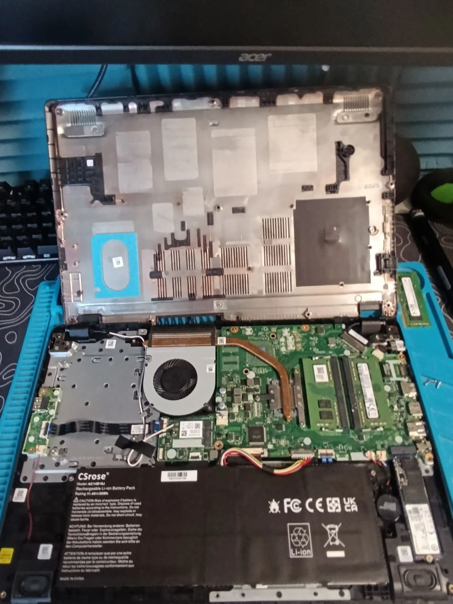
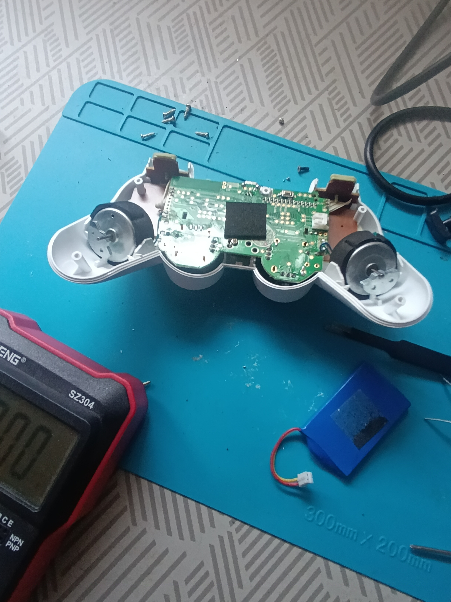
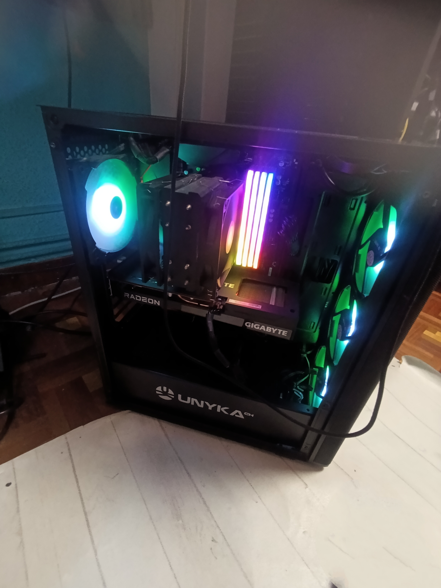
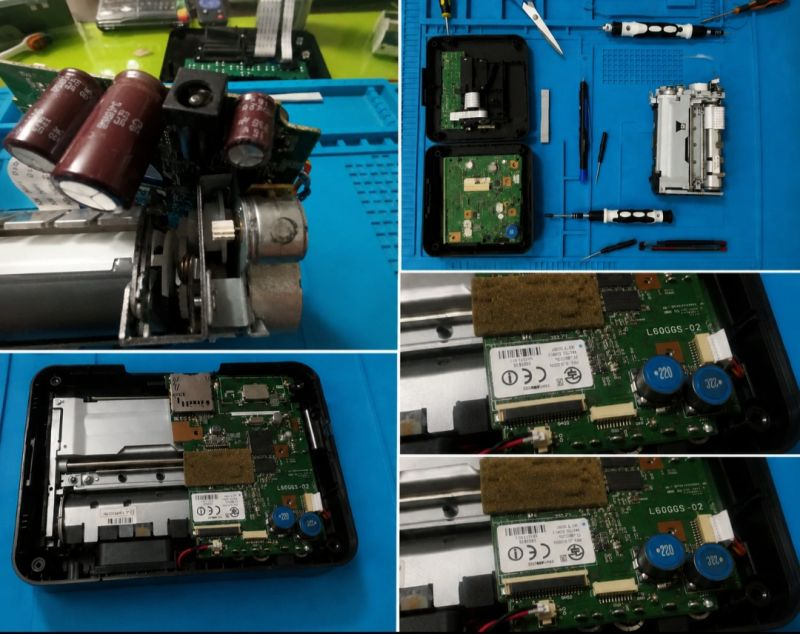

Hola
Soy Hugo
Estudiante SMR
Soy estudiante de SMR, apasionado por las redes y la administración de sistemas. Me gusta aprender por mi cuenta creando proyectos.
Valladolid (España)

Soy estudiante de SMR, apasionado por las redes y la administración de sistemas. Me gusta aprender por mi cuenta creando proyectos.
Valladolid (España)
Me encanta de la informática y la tecnología. Desde pequeño me ha gustado desmontar cosas para entender cómo funcionan, y eso me llevó a descubrir mi verdadera pasión: los sistemas, las redes y el hardware.
Actualmente estudio SMR (Sistemas Microinformáticos y Redes) y disfruto creando proyectos por mi cuenta, tanto de software como de hardware. Me encanta reparar equipos, montar servidores en casa, programar scripts en PowerShell y aprender cosas nuevas cada día.
Mi objetivo es seguir formándome en ASIR y especializarme en administración de sistemas y ciberseguridad, combinando siempre el aprendizaje autodidacta con la formación reglada.

Mantenimiento, reparación de equipos informáticos.
.png)
Configuración de redes, routers, switches y conexiones de red.

Desarrollo de sitios web con HTML, CSS y JavaScript WordPress .

Administración de sistemas Windows, Linux y servicios de red.

Tecnologías y Herramientas que manejo.


Proyectos personales que he realizado

Herramienta en PowerShell para instalar y desinstalar programas de forma rápida y automatizada.
Completado
Ver proyecto en GitHub
Restauración de un mando PS4 mediante cambio de componentes, joysticks y renovación de la carcasa.
Completado
Ver proyecto en LinkedIn
Herramienta en PowerShell para comprobar conexiones de red mediante diferentes comandos y pruebas.
Completado
Ver proyecto en GitHub
Restauración de una Wii mediante cambio de carcasa, modificaciones y renovación de componentes.
Completado
Ver proyecto en LinkedIn
Restauración de un PC antiguo con óxido para convertirlo en un equipo LGA 1155 preparado para jugar a juegos retro.
Completado
Ver proyecto en LinkedIn
Restauración de un mando Xbox 360 mediante cambio de botones, carcasa y diferentes componentes.
Completado
Ver proyecto en LinkedIn
Base de datos en Access sobre el Real Valladolid con 17 tablas relacionadas y diferentes registros.
Completado
Ver proyecto en GitHub
Laboratorio doméstico para practicar servidores, redes, virtualización y diferentes tecnologías de sistemas.
En proceso
Mi formación académica y evolución profesional
Durante estos años adquirí una base sólida en matemáticas, ciencias y tecnología, siendo esta última mi punto fuerte. Desde 3.º de ESO tuve claro que quería realizar un grado medio relacionado con el ámbito tecnológico, priorizando siempre la práctica frente a la teoría.
CompletadoEstoy cursando 2.º de SMR, donde ya cuento con una base sólida en sistemas, redes, hardware y soporte técnico. He adquirido conocimientos en administración de sistemas Windows y Linux, configuración de redes, desarrollo web, scripting con PowerShell y Bash, y mantenimiento de equipos informáticos.
En cursoAprendiendo cada día con cada reparación

Mantenimiento
Sustitución de componentes
Revivir de ordenadores viejos
Montaje a medida

Mantenimiento
Cambio de batería
Actualización de disco
Cambio de pantalla
Botones
Joysticks magnéticos
Soldadura de botones
Limpieza interna
Limpieza interna
Cambio de pasta térmica
Reparación de lectores
Restauración de consolas

Medición de componentes
Pruebas con multímetro
Soldadura de puertos
Soldadura de componentes

Medición de tensiones
Pruebas de continuidad
Detección de cortos
Localización de fallos

Instalación de sistemas
Clonación de datos a SSD
Resolución de problemas en el sistema
Cambios en BIOS

Cableado estructurado
Configuración de routers
Resolución de problemas en red
Instalación de redes locales

Limpieza de polvo
Revisión de temperaturas
Revisión de componentes
Prevención de averías

Recomendación de mejoras
Explicación de fallos
Presupuestos y seguimiento
Asistencia post-reparación
Actualmente estudio Sistemas Microinformáticos y Redes (SMR). Me apasiona la informática y busco constantemente aprender, mejorar mis habilidades y afrontar nuevos retos en soporte técnico, sistemas, redes y desarrollo.

Diagnóstico y reparación de ordenadores, realizando mantenimientos internos, limpieza y sustitución de componentes para mejorar su funcionamiento.

Instalación y configuración de Windows, Linux y Office, preparando el sistema y optimizando el equipo para conseguir un funcionamiento correcto.

Configuración de routers, switches y redes, realizando también el crimpado de cables y solucionando diferentes incidencias de conexión.

Asesoramiento personalizado para elegir equipos adecuados, analizando sus características, ventajas y desventajas según las necesidades.
Habilidades que estoy aprendiendo actualmente.
Técnicas de recuperación y mantenimiento de superficies deportivas y recreativas.
Diagnóstico y solución de averías hardware y software en dispositivos móviles.
Contenerización de aplicaciones, orquestación y despliegue en entornos productivos.
Si quieres contactar conmigo, puedes hacerlo mediante este formulario o mi correo.